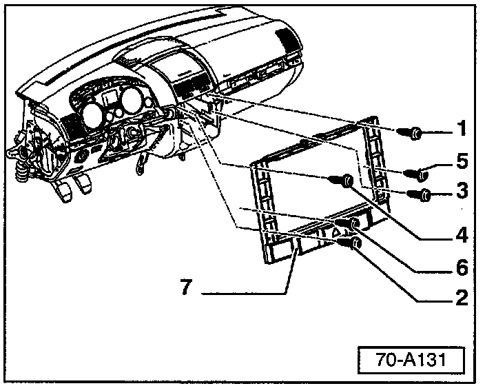
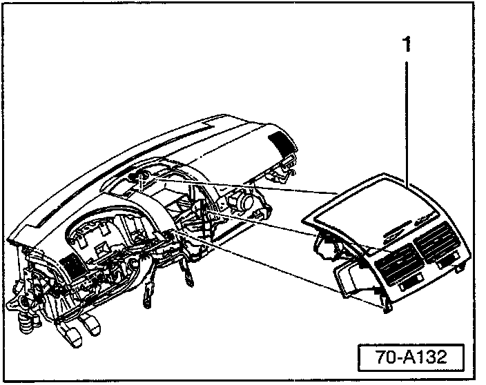
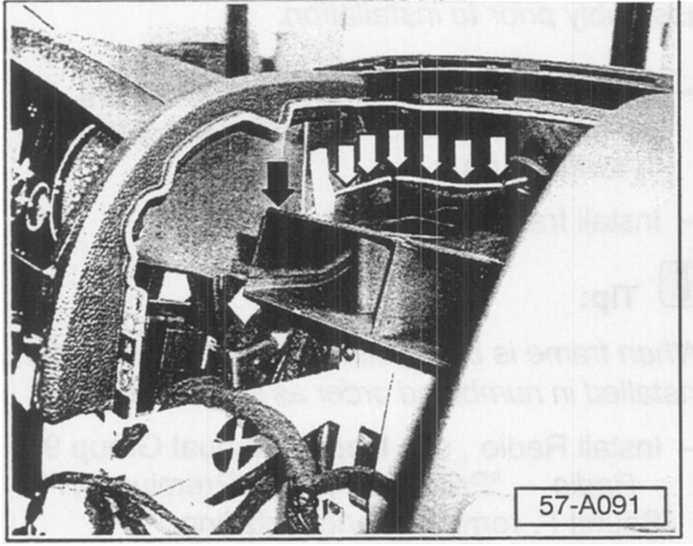
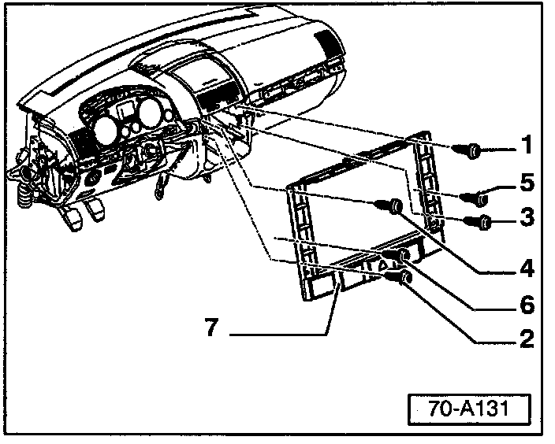
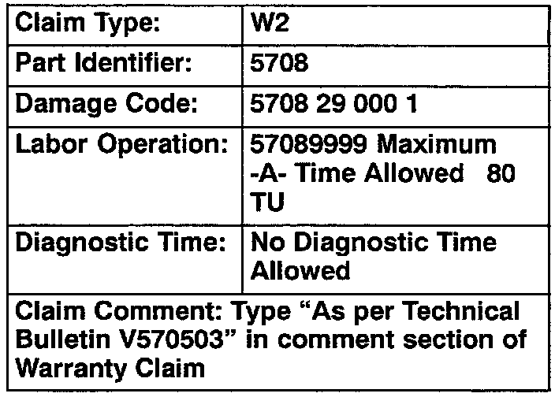

Keyless Entry - Remote Only Works At Close Range
Group: 57Number: 05-03
Date: Oct. 21, 2005
Subject:
Folding Key Radio Remote Control, Functions Only at Close Range
Model(s):
Touareg 2004 > 7L4D079403
Supersedes T.B. Group 57 number 04-03 dated Mar. 10, 2004 due to the removal of this bulletin from Required Vehicle Updates Category.
Tip:
DO NOT complete this Technical Bulletin if OTIS shows the BD code is complete.
Part numbers listed in this bulletin are for reference only. Always check with your Parts Dept. for the latest information.
Condition
Radio frequency remote control transmitter functions only at close range.
Production
New routing for remote control key antenna as of VIN: WVGEM77L4D079403.
Service
Verification:
Verify remote control operates properly at close range.
Verify and record each distance the remote transmitter operates from front, rear, left and right sides of vehicle.
If system operates correctly only at close range, perform the following antenna modification.
Materials required:
^ VAS 1978 wiring repair kit
^ Repair wire Part No: 000 979 003
^ Bulk .5 mm wire (approx. 1000 mm) which can be obtained from Part No: 000 979 981 (comes on 10 meter spool - use 0.10 qty. in Parts field on Warranty Claim)
^ Butt splice - Part No: 111 971 941A
^ Electrical tape (yellow)
^ Small tie straps
Procedure:
- Remove Radio, see Repair Manual Group 91 - Radio "Premium VI" & "Premium VI - Sound I", removing and installing.

- Remove screws -1 - through - 6-.
Tip:
When frame is being installed, screws must be installed in numbered order.
Frame -7- must be completely removed, DO NOT lay frame on console!
- Remove frame - 7 - from instrument panel and disconnect wiring harnesses (depending on vehicle equipment) from switch strip.

- Remove center storage bin/vent assembly -1-, see Repair Manual Group 70 - Instrument panel, removing and installing.
Tip:
Center storage bin/vent assembly is secured by small metal clips which may come off during removal. Ensure that all clips are located and reinstalled on assembly prior to installation.
- Remove Access/Start Control Module -J518-, see Repair Manual Group 94 - Access/Start Control Module - J518 -, removing and installing.
- Remove cover from Access/Start Control Module -J518- connector.
- Locate and remove terminal 62 for remote antenna wire -R168- (clear wire sheathing) (see appropriate VESIS wiring diagram if necessary).
- Terminate this wire using a cut, fold and tape method.
- Obtain repair wire Part No: 000 979 003 from VAS 1978 Repair kit.
- Obtain approx. 1000 mm (3 ft.) bulk .5 mm wire.

- Route 1000 mm (3 ft.) .5 mm wire down alongside of center air distribution duct (black arrow) to Access/Start Control Module -J518- as shown.
- Splice 1000 mm (3 ft.) bulk .5 mm wire to new terminal wire Part No: 000 979 003 using butt splice - Part No: 111 971 941A (see VAS 1978 Wiring Harness Repair Manual for instructions).
- Insert terminal into cavity 62 of Access/Start Control Module -J518- connector.
- Reinstall hard-shell housing on Access/Start Control Module -J51B- connector.
- Secure wire leading to (Access/Start Control Module -J518-) as necessary (to eliminate any rattles).
- Reinstall Access/Start Control Module -J518-.
- Finish new antenna wire routing along existing harness (white arrows shown in 57-A091) to grommet.
- Secure wire into position with tie straps and tape.
- Trim excess wire so that wire terminates at grommet.
Assembly:
- Install center storage bin/vent assembly.
Tip:
Ensure that all (center storage bin/vent assembly) clips are located and reinstalled on assembly prior to installation.
- Connect wiring harnesses (depending on vehicle equipment) to appropriate switches in switch strip.

- Install frame - 7-.
Tip:
When frame is being installed, screws must be installed in numbered order as seen in 70-A131.
- Install Radio, see Repair Manual Group 91 - Radio - "Premium VI" & "Premium VI - Sound I", removing and installing.
Repair Verification:
- Refer to original remote key distances recorded in Verification prior to repair.
- Perform distance verification from front, rear, Left side and right side. Record before and after results on repair order.

When procedure applies to vehicles within the New Vehicle Limited Warranty, use the table.